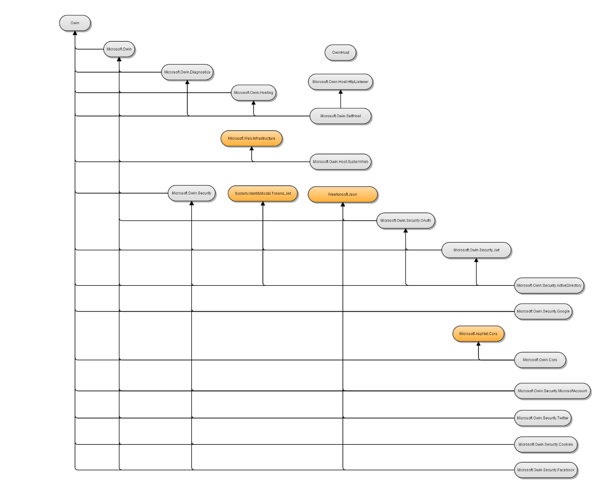
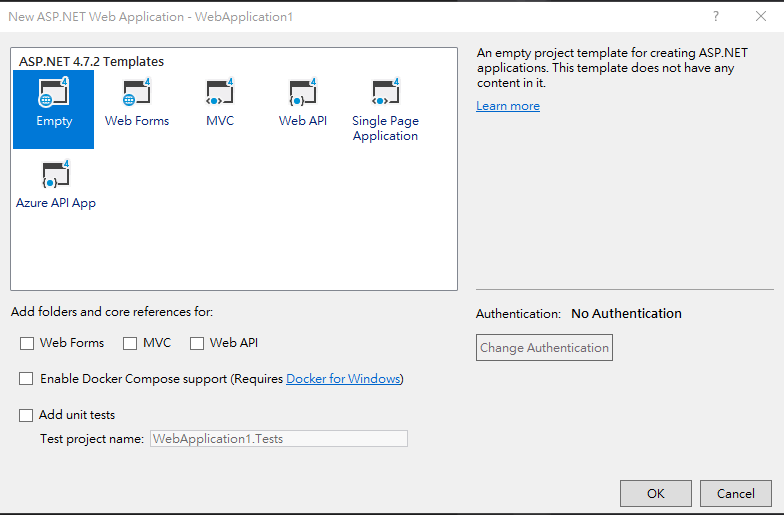
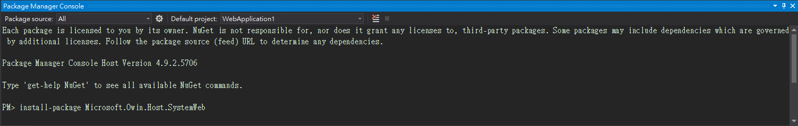
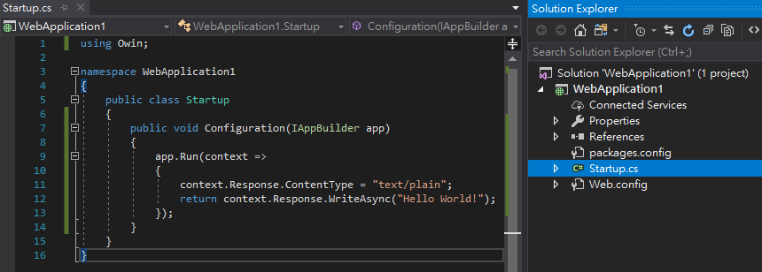
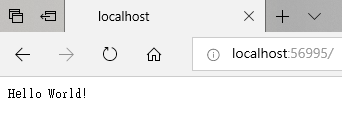
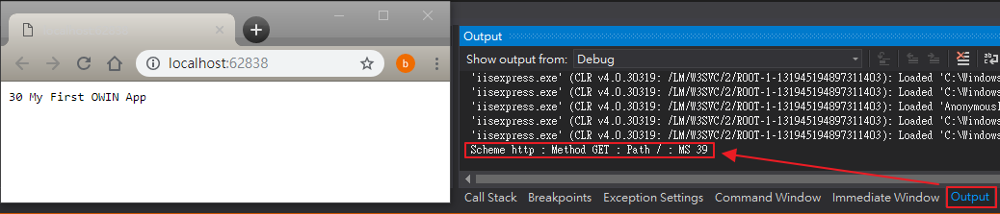
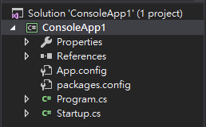
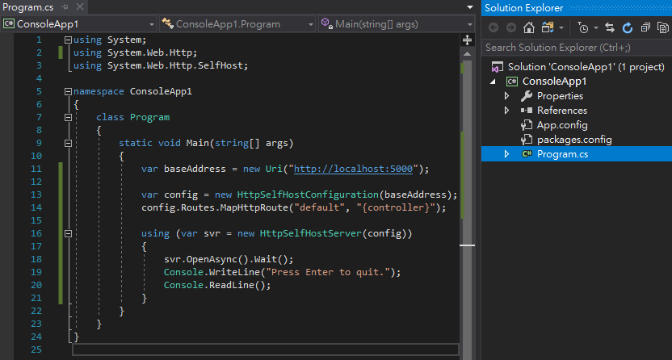

Katana project example
OWIN 只是個標準，而 Katana 是實作 OWIN 的一個專案。
Katana package dependency graph

一、Katana Web Application example
1、開一個空的 Web Application 專案

2、於 package manager console 安裝 Microsoft.Owin.Host.SystemWeb 套件
$ install-package Microsoft.Owin.Host.SystemWeb

3、撰寫程式碼
於專案內新增名為 Startup.cs 檔案

Startup.cs 內容如下
using Owin;
namespace WebApplication1
{
public class Startup
{
public void Configuration(IAppBuilder app)
{
app.Run(context =>
{
context.Response.ContentType = "text/plain";
return context.Response.WriteAsync("Hello World!");
});
}
}
}
再按 F5 Run 起來，一個 self-host 的服務就成功跑起來。

4、其他範例
using Owin;
using System;
using System.IO;
namespace WebApplication1
{
public class Startup
{
public void Configuration(IAppBuilder app)
{
// The app.Use lambda expression is used to register the specified middleware component to the OWIN pipeline.
app.Use((context, next) =>
{
TextWriter output = context.Get<TextWriter>("host.TraceOutput");
return next().ContinueWith(result =>
{
output.WriteLine("Scheme {0} : Method {1} : Path {2} : MS {3}",
context.Request.Scheme, context.Request.Method, context.Request.Path, getTime());
});
});
// The app.Run lambda expression hooks up the pipeline to incoming requests and provides the response mechanism.
app.Run(async context =>
{
await context.Response.WriteAsync(getTime() + " My First OWIN App");
});
}
string getTime()
{
return DateTime.Now.Millisecond.ToString();
}
}
}
Run 成功時，除了可以瀏覽網頁之外，還可以在 output 端看到自訂訊息。

二、Katana console app example
1、開一個 ConsoleApp 專案，其檔案結構如下

2、安裝 Microsoft.Owin.SelfHost 套件
$ Install-Package Microsoft.Owin.SelfHost
3、撰寫程式碼
program.cs
using System;
using Microsoft.Owin.Hosting;
namespace ConsoleApp1
{
class Program
{
static void Main(string[] args)
{
const string baseUrl = "http://localhost:5000/";
using (WebApp.Start<Startup>(new StartOptions(url: baseUrl)))
{
Console.WriteLine("Press Enter to quit.");
Console.ReadKey();
}
}
}
}
Startup.cs
using Owin;
namespace ConsoleApp1
{
class Startup
{
public void Configuration(IAppBuilder app)
{
app.Run(context =>
{
context.Response.ContentType = "text/plain";
return context.Response.WriteAsync("Hello World!");
});
}
}
}
三、Web API console app example
1、開一個 ConsoleApp 專案，其檔案結構如下

2、於 package manager console 安裝 AspNetWebApi.SelfHost 套件
$ Install-Package AspNetWebApi.SelfHost
3、撰寫程式碼
Program.cs 內容如下
using System;
using System.Web.Http;
using System.Web.Http.SelfHost;
namespace ConsoleApp1
{
class Program
{
static void Main(string[] args)
{
var baseAddress = new Uri("http://localhost:5000");
var config = new HttpSelfHostConfiguration(baseAddress);
config.Routes.MapHttpRoute("default", "{controller}");
using (var svr = new HttpSelfHostServer(config))
{
svr.OpenAsync().Wait();
Console.WriteLine("Press Enter to quit.");
Console.ReadLine();
}
}
}
}
4、你在 F5 時可能會出現下面問題
System.AggregateException
HResult=0x80131500
Message=發生一或多項錯誤。
Source=mscorlib
StackTrace:
at System.Threading.Tasks.Task.ThrowIfExceptional (Boolean includeTaskCanceledExceptions)
at System.Threading.Tasks.Task.Wait(Int32 millisecondsTimeout, CancellationToken cancellationToken)
at System.Threading.Tasks.Task.Wait()
at ConsoleApp1.Program.Main(String[] args) in C:\Desktop\ConsoleApp1\ConsoleApp1\Program.cs
Inner Exception 1:
AddressAccessDeniedException: HTTP 無法登錄 URL http://+:5000/。您的處理程序沒有足夠的存取權可存取此命名空間 (如需詳細資訊，請參閱 http://go.microsoft.com/fwlink/?LinkId=70353)。
Inner Exception 2:
HttpListenerException: 存取被拒。
解決辦法為，請增加命名保留區。
命名空間保留區會將一部分 HTTP URL 命名空間的權限指派給特定的使用者群組。
保留區會授予這些使用者建立服務的權限，以接聽那一部分的命名空間。
5、netsh http 語法
a、新增命名保留區
$ netsh http add urlacl url=http://+:5000/ user=everyone
b、刪除命名保留區
$ netsh http delete urlacl url=http://+:5000/
c、查詢命名保留區
$ netsh http show urlacl
參考資料：
netsh：